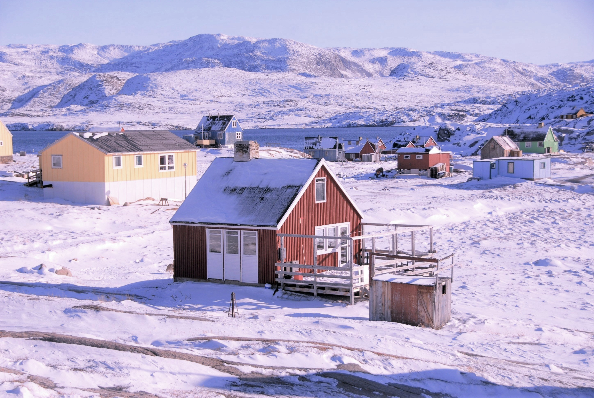
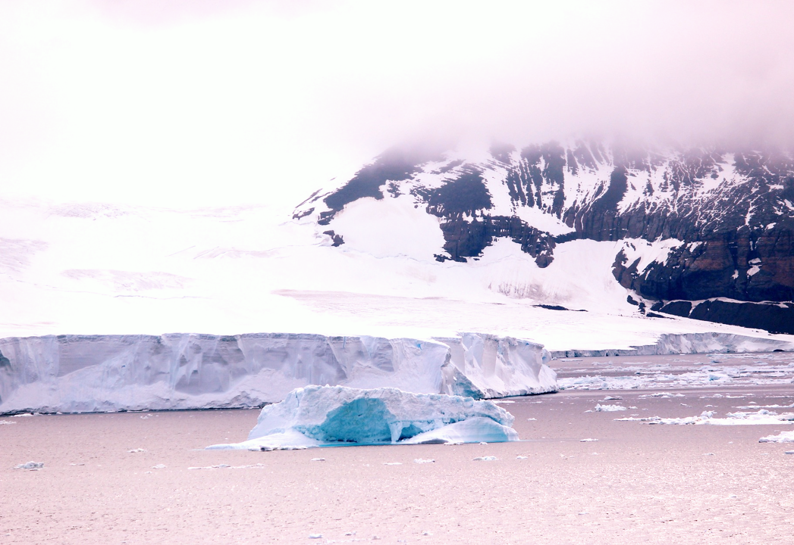
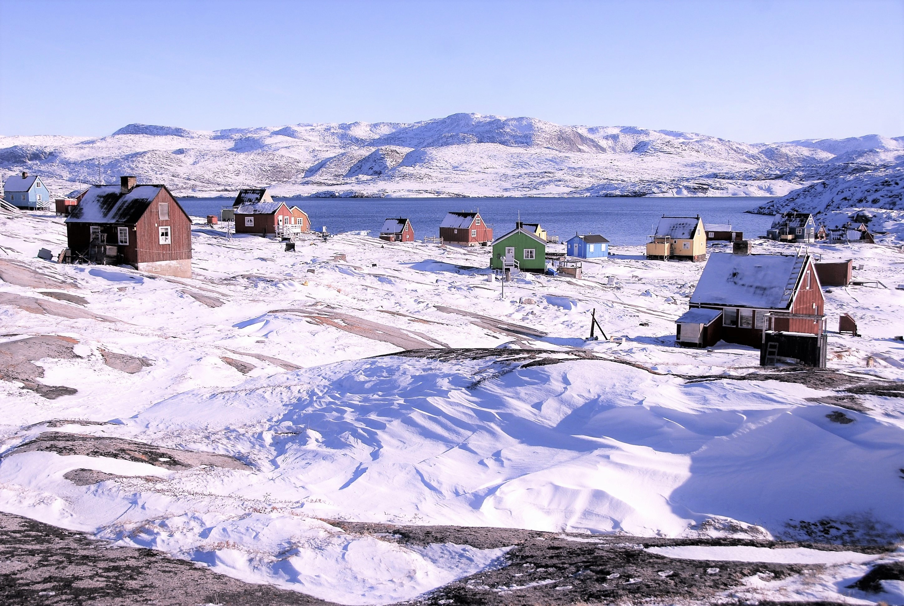

Le 1er septembre 2019
Le mois d'août 2019, Donald Trump confirmait au Danemark sa
volonté d’acheter le Groenland.
Il n’est pas le seul à lorgner sur cette île du grand Nord : Chine et Russie avancent déjà leurs pions sur la calotte, bien décidés à gagner la partie.
Nouvelle Bleue met le cap sur le Groenland pour comprendre l’enjeu de ces batailles.
Un petit continent
Difficile d’estimer la taille du Groenland que nous voyons souvent déformé par les projections terrestres en deux dimensions. L’île s’étend en réalité sur 2 millions de km², soit
cinq fois la France métropolitaine. Seule une petite portion de ce territoire est exploitable. La neige tombe et s’accumule sur le Groenland, si bien qu’elle a formé au cours des millénaire
une immense calotte polaire. La glace mesure en moyenne 2 km d’épaisseur et recouvre 80% de l’île. Elle constitue à elle seule
10% des réserves mondiales d’eau douce !
Un trésor convoité

L’eau n’est pas la seule richesse du Groenland.
Pétrole, gaz, or, diamants, uranium, terres rares… L’île renferme de précieuses ressources sous une armure de glace qui fond à mesure que la Terre se réchauffe. Bientôt accessibles, ces réserves de matières premières attisent bien sûr l’intérêt des puissants de ce monde : Etats-Unis, Chine et Russie – pour ne citer que les plus opiniâtres. En mai 2019, les Etats Unis accusaient la Chine d’un « comportement agressif » à la conquête de l’Arctique. Car la Chine compte bien consolider son quasi-monopole en termes de terres rares. Elle multiplie les investissements en Islande, Scandinavie, Russie mais aussi au Groenland où elle installe des civils. Cette présence lui permet de justifier le déploiement de sous-marins militaires censés protéger la population… La Chine s’étend sur l’échiquier.
Trump à l’attaque
Les Etats Unis prennent tant de retard en Arctique que son président passe à l’attaque.
Le 18 août 2019, il propose au Danemark de lui acheter le Groenland.
Mais dans sa hâte, Trump oublie d’étudier la situation politique de l’île convoitée.
Et c’est le premier ministre du Groenland, Kim Kielsen, qui lui répond le 19 août :
« Le Groenland n’est pas à vendre et
ne peut pas être vendu ». Ce à quoi Mette Frederiksen, la première ministre danoise, renchérit :
« Le Groenland n’est pas à vendre. Le Groenland n’est pas danois. Il appartient aux Groenlandais. »

Une île sous tutelle
D’abord une colonie danoise, le Groenland a été assimilé à un département en 1953.
Il obtient ensuite une certaine autonomie en 1979, qui sera renforcée en 2009 :
le Groenland est responsable de toutes les questions politiques, économiques et juridiques, tandis que le royaume du Danemark garde le contrôle
sur la politique étrangère et la défense de l’île.
Le Groenland est ainsi libre de déclarer son indépendance !
Mais ce n'est pas pour tout de suite : l'ancienne colonie reste aujourd'hui attachée au Danemark qui lui apporte plus de
650 millions de dollars de subventions annuelles.
L’indépendance a un prix
Afin de se libérer de la tutelle danoise, le Groenland a besoin de nouveaux partenaires financiers.
Bien que le premier ministre ait rejeté net la proposition de Trump d’acheter l’île,
il n’est pas impossible que certaines parcelles lui soient cédées à l’avenir en échange d’un peu d’aide…
A l’heure actuelle,
le Groenland ne vit que de l’exportation des produits de la pêche, des subventions danoises et du soutien financier de l’Union Européenne
qui lui apporte 42 millions d’euros par an. L’île avait pourtant quitté le marché commun de l’UE en 1985 suite à un référendum.
Elle lui reste associée via des accords dans les domaines de la pêche, de l’éducation et de la recherche.
A notre échelle
Difficile d'aider le Groenland... Mais nous pouvons soutenir l'Union Européenne aux élections, favoriser les circuits courts, l'économie locale - française ou européenne à la rigueur - et
boycotter les produits importés depuis les Etats Unis et la Chine lorsqu'il existe des options plus locales.
Et surtout :
consommer moins, recycler et réutiliser nos affaires car leur confection nécessite des matières premières, telles celles qui font la richesse du Groenland mais aussi son attrait pour les investisseurs.
Le Groenland, ce sont 57 000 habitants à majorité inuit, occidentalisés malgré eux et aujourd’hui menacés par l’avidité des puissants. Ils ne conserveront les droits sur leur territoire que s’ils ont les moyens d’y vivre. Soutenir le Groenland et agir en faveur de son autonomie, c’est lui éviter des partenariats signés à contre-cœur et sauvegarder les richesses de son patrimoine culturel, ses paysages et ses matières précieuses. Mais aussi ralentir la course vers l’Arctique qui met en danger la biodiversité, les populations locales, le climat – et vous avec.
Sources :
La Vie Le Groenland sera-t-il vendu ?
Le Figaro Le Groenland n'est pas à vendre.